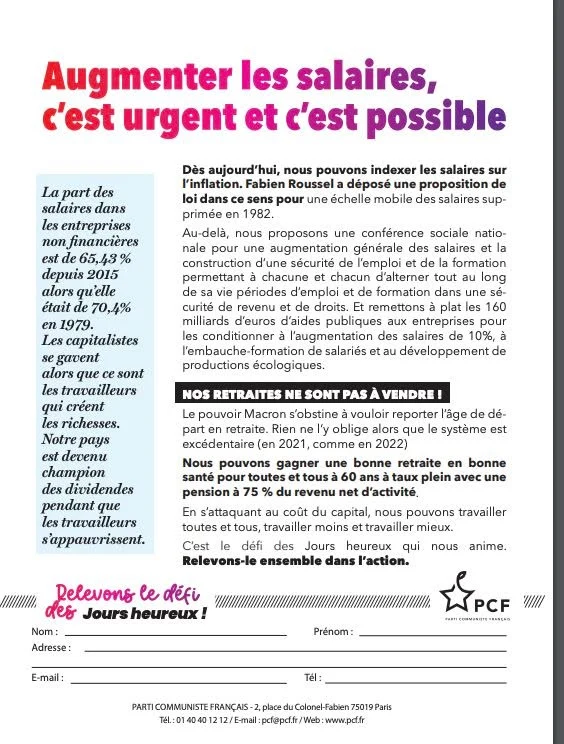

Publication d’archives
Salaires, emplois, retraites, tous dans l'action jeudi 27 octobre.
Date indiquée par Facebook · 25 octobre 2022
Texte conservé avec la publication
Contexte du dossier
Les 14 et 17 octobre, la page appelle au 18 devant la préfecture de Niort, pour les salaires et le droit de grève. Le compte rendu du 18 évoque plus d’un millier de personnes et la présence d’enseignants de lycées professionnels opposés à leur réforme. Il annonce aussi une proposition de loi communiste pour indexer les salaires sur l’inflation : une intention parlementaire, non une mesure déjà acquise.
L’action ne s’arrête pas à cette journée. Un nouveau rendez-vous est annoncé le 27 octobre devant la préfecture ; le 10 novembre, les appels portent sur Thouars et sur la blanchisserie de l’ADAPEI à Châtillon-sur-Thouet, dans le secteur de Parthenay. Les lieux changent, la demande demeure : que la hausse des prix cesse d’absorber les revenus du travail et les pensions. Ces deux dernières publications annoncent les rassemblements, sans en livrer le résultat.

Sources
Archive rouge · export Facebook · AR-0002-FB-01827
À lire aussi · Infâme: à Noël Macron dépouille les chômeurs